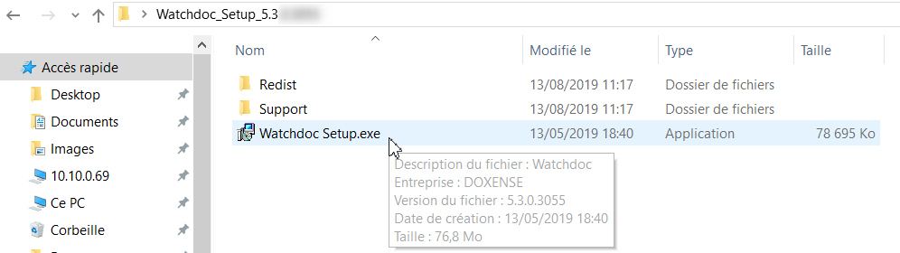
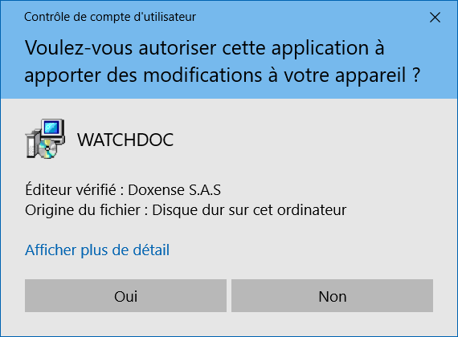
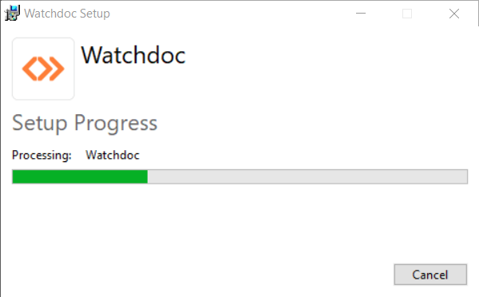
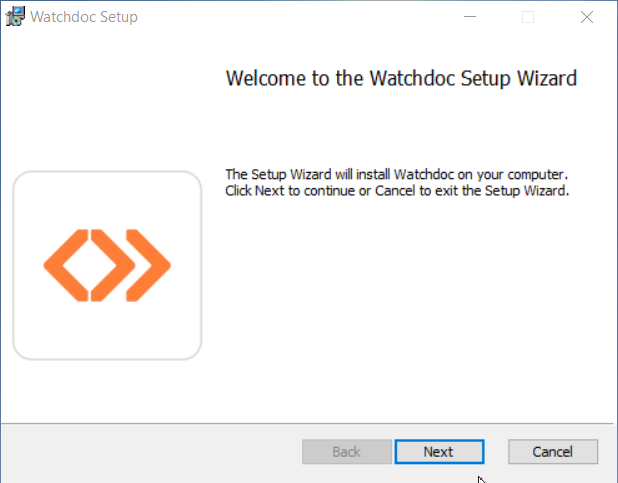
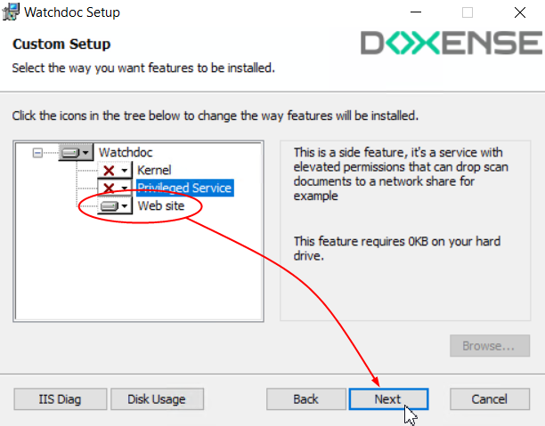
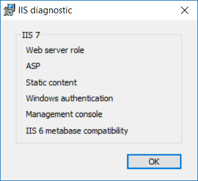
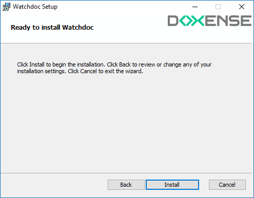
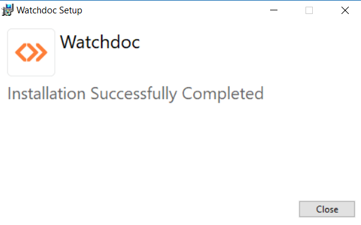

En mode déporté (configuration déconseillée), les composants kernel En anglais, Kernel signifie "noyau". Dans nos documents, il désigne le service de Watchdoc chargé de la gestion des impressions hors Site web. et site web (IIS) de Watchdoc sont installés sur des serveurs distincts.
En anglais, Kernel signifie "noyau". Dans nos documents, il désigne le service de Watchdoc chargé de la gestion des impressions hors Site web. et site web (IIS) de Watchdoc sont installés sur des serveurs distincts. 
Cliquez sur l'image pour l'agrandir
Ce chapitre vous indique la manière d'installer le Site web Watchdoc sur le serveur web (IIS).
L'installation de Watchdoc comporte les étapes suivantes :
-
vérification des prérequis ;
-
décompression de l'archive ;
-
installation du Site web Watchdoc .
-
Vous devrez compléter l'opération par l'installation du kernel Watchdoc (cf. Installer le kernel Watchdoc).
Décompresser l'archive
L'outil d'installation est enregistré dans un dossier d'archive nommé Watchdoc[…].zip. Il doit être décompressé dans un dossier du serveur.
-
Dans l'arborescence du serveur, créez un dossier dans lequel seront décompressés les fichiers d'installation Watchdoc.
-
Vérifiez que l’archive zip n’est pas bloquée :
-
cliquez droit sur le fichier de l’archive > Propriétés ;
-
dans la section Sécurité, cochez la case Débloquer si elle n'est pas cochée.
-
cliquez sur OK pour débloquer l'archive ou fermez la fenêtre si l'archive n'est pas bloquée :

-
-
Décompressez l'archive Watchdoc[...].zip dans le dossier créé à cet effet.
Lancer l'installation de Watchdoc
Dans le dossier d'archive décompressé :
-
Double-cliquez sur le fichier Watchdoc_Setup.exe :

-
Acceptez les conditions de licence après en avoir pris connaissance, puis cliquez sur Install :

→ le programme d'installation s’assure que Microsoft .Net Framework 4..7.2 est installé sur un serveur .
→ si Microsoft .NET Framework n'est pas installé, le programme procède à son installation ;
→ un contrôleur demande confirmation pour poursuivre l'installation;

→Les étapes de l'installation s'affichent dans la fenêtre Setup Progress.

→Au terme de l'installation, un message vous accueille sur l'assistant d'installation.

-
Cliquez sur Next.pour poursuivre l'installation
Configurer le composant Site web de Watchdoc
-
Pour installer l'interface web de Watchdoc® seul, le composant Web site doit être installé. Dans la liste des composants installés, désélectionnez Kernel
 En anglais, Kernel signifie "noyau". Dans nos documents, il désigne le service de Watchdoc chargé de la gestion des impressions hors Site web. ;
En anglais, Kernel signifie "noyau". Dans nos documents, il désigne le service de Watchdoc chargé de la gestion des impressions hors Site web. ;
-
Pour vous assurer que l’ensemble des prérequis sont respectés et ainsi autoriser une installation correcte de l’interface web d’administration, cliquez sur le bouton IIS Diag.

.
è Dans cette fenêtre, si un composant est manquant, il apparaît en gris. Le cas échéant, il vous revient de corriger le problème avant de commencer l’installation de l’application web d’administration.
Avec IIS 7, il est possible de lancer le script d’installation automatisée des composants requis pour le bon fonctionnement de l’interface d’administration Watchdoc. Le script est disponible dans le répertoire support du package d’installation (install IIS7 (Windows Server 2008).bat).
Le bouton Disk Usage permet de vérifier qu’il reste suffisamment d’espace sur le disque que vous avez choisi pour installer Watchdoc.
-
cliquez sur Next pour poursuivre l'installation
-
L'interface Web site installation options s'affiche. Si la case Utiliser les paramètres par défaut est cochée, le programme d'installation utilise le site désigné comme site web par défaut et enregistre les fichiers dans le dossier c:\Ninetpub\Nwwwroot. Lorsque la case n'est pas cochée et qu'un site web autre que le site par défaut est désigné, le programme d'installation enregistre les fichiers dans le dossier correspondant à ce site web spécifique.
-
Use Default parameters : décochez la case si vous souhaitez configurer un autre site web que le site par défaut et sélectionnez ce site dans la liste présentée en-dessous ;
-
Zone de saisie : indiquez le serveur web qui doit être utilisé pour l’interface web d’administration de Watchdoc s'il ne s'agit pas du site par défaut ;
-
Serveur ID : saisissez l'ID du serveur d'impression sur lequel est installé le kernel Watchdoc ;
-
IP/NETBIOS/DNS : saisissez l'adresse IP ou le nom d’ordinateur du serveur d'impression sur lequel est installé le kernel Watchdoc.
-
Keep diagnostic pages (présent depuis Watchdoc v6.1.0.4926) permet de conserver ou non le mode "debug". Ce mode permet d'afficher des outils de diagnostic pour aider à l'analyse en cas de dysfonctionnement de Watchdoc (voir Activer le mode debug).

-
-
Cliquez sur Next pour poursuivre l'installation.
Finaliser l'installation de Watchdoc
-
Dans la fenêtre Ready to install Watchdoc, cliquez sur Install.

-
La fenêtre Installing Watchdoc affiche la progression de l'installation.
-
L'assistant affiche un message informant de la fin de l'installation.

-
Cliquez sur Finish pour quitter l'assistant.
è L'assistant affiche un message informant de la réussite de l'installation.
-
Si le kernel Watchdoc n'est pas encore installé, procédez à son installation sur le serveur d'impression dédié (cf. Installer le kernel Watchdoc).
-
Si le kernel Watchdoc est déjà installé, l'installation est terminée. Procédez à la configuration initiale de Watchdoc® depuis son interface d'administration en cliquant sur le raccourci
 affiché sur le bureau de votre espace de travail (cf. Accéder à l'interface de configuration).
affiché sur le bureau de votre espace de travail (cf. Accéder à l'interface de configuration).